增加账户
- iPad设备点击左侧边栏的“记账”按钮，iPhone设备点击底部的“记账”按钮，进入记账页面；
- 点击账户列表下方的”+“按钮；
- 在“账户类型”下拉框中选择“借记账户”；
- 填写账户名称和其他账户信息，红色为必填内容；
- 点击“确定”按钮完成。
- iPad设备点击左侧边栏的“记账”按钮，iPhone设备点击底部的“记账”按钮，进入记账页面；
- 点击账户列表下方的”+“按钮；
- 在“账户类型”下拉框中选择“贷记账户”；
- 填写账户名称和其他账户信息，红色为必填内容；
- 点击“确定”按钮完成。
- iPad设备点击左侧边栏的“记账”按钮，iPhone设备点击底部的“记账”按钮，进入记账页面；
- 点击账户列表下方的”+“按钮；
- 在“账户类型”下拉框中选择“理财账户”；
- 填写账户名称和其他账户信息，红色为必填内容；
- 点击“确定”按钮完成。
- iPad设备点击左侧边栏的“记账”按钮，iPhone设备点击底部的“记账”按钮，进入记账页面；
- 点击账户列表下方的”+“按钮；
- 在“账户类型”下拉框中选择“贷款账户”；
- 填写账户名称和其他账户信息，红色为必填内容；
- 点击“确定”按钮完成。
增加借记账户
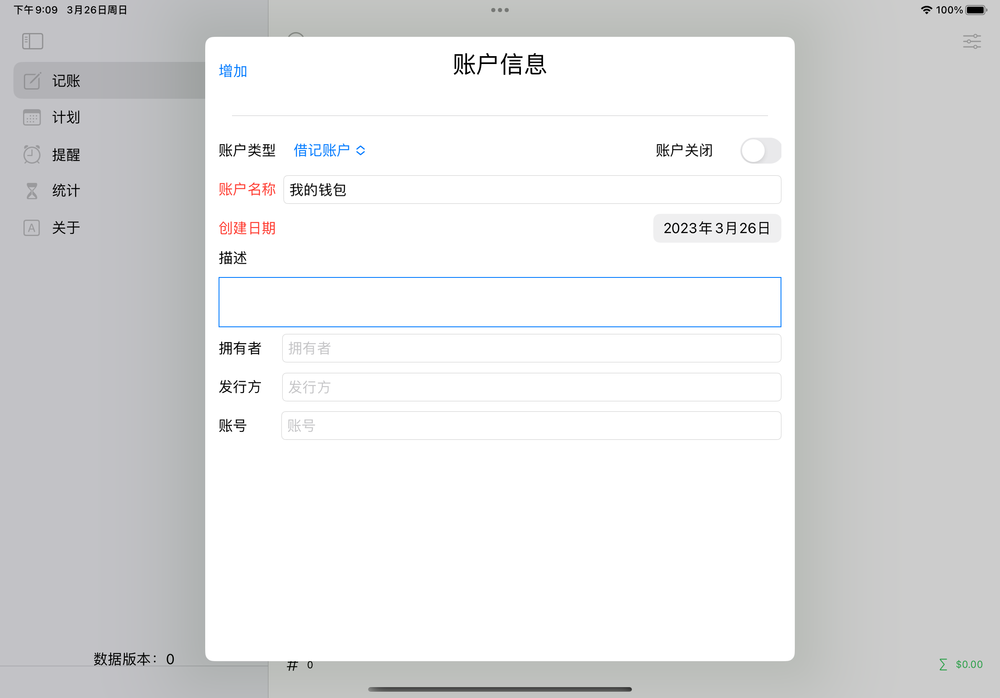
增加借记账户(iPad)
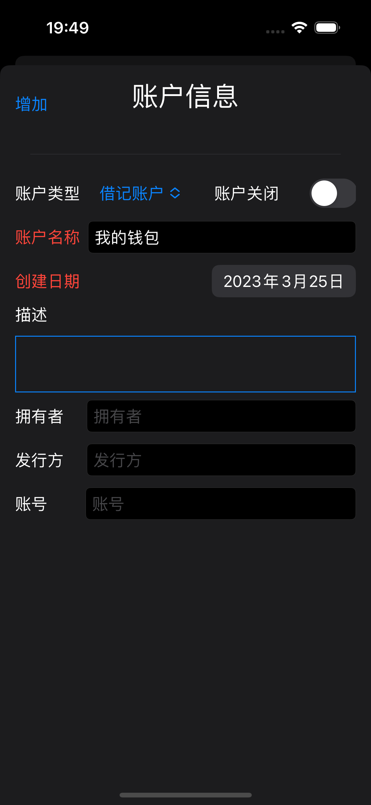
增加借记账户(iPhone)
增加贷记账户
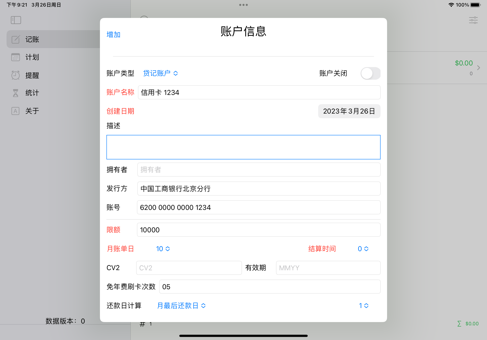
增加贷记账户(iPad)
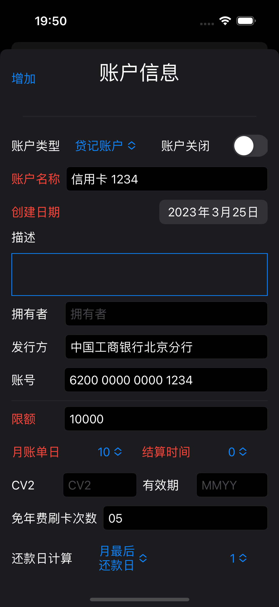
增加贷记账户(iPhone)
增加理财账户
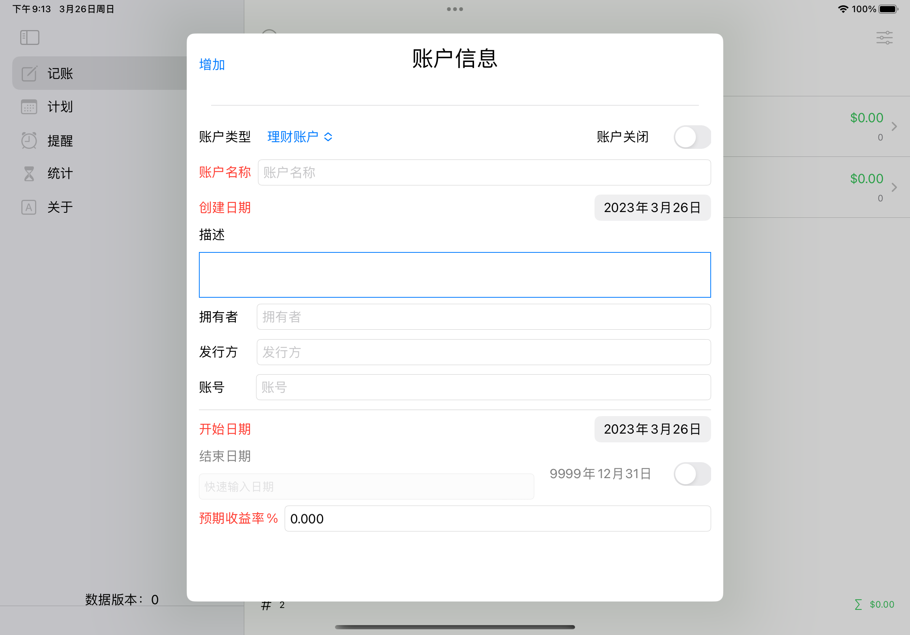
增加理财账户(iPad)
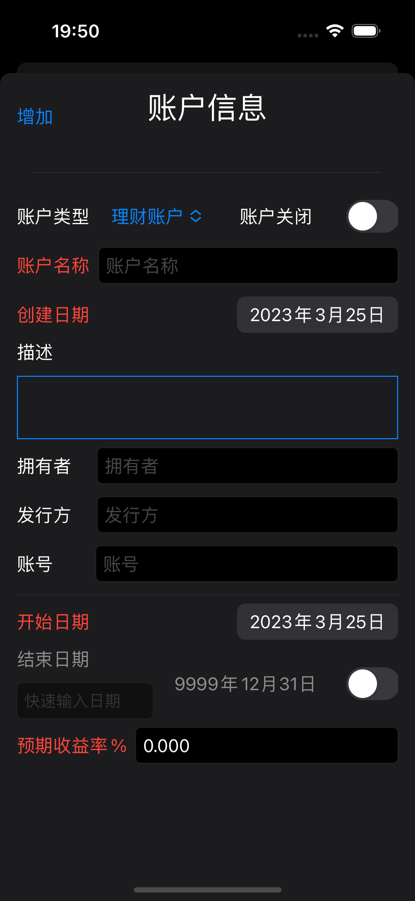
增加理财账户(iPhone)
增加贷款账户
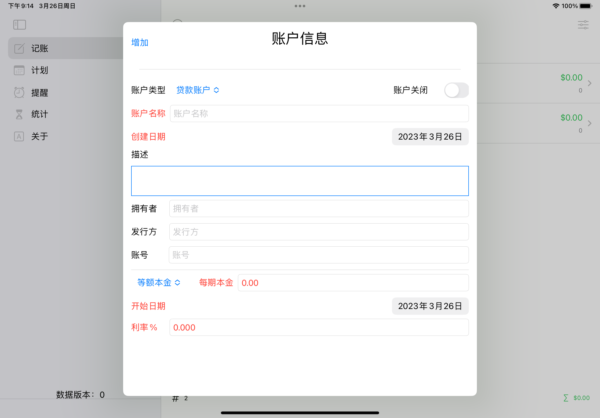
增加贷款账户(iPad)
增加贷款账户(iPhone)
记账
- iPad设备点击左侧边栏的“记账”按钮，iPhone设备点击底部的“记账”按钮，进入记账页面；
- 选择账户列表中的一个账户（可通过工具栏的"过滤"按钮对账户列表进行过滤）；
- 此时显示交易明细列表，列表上方有“过滤“和”记账”工具栏按钮，“过滤”按钮会显示“交易明细过滤”窗口，可以对交易明细列表里的交易明细进行过滤；“记账”按钮会显示“交易明细”窗口；
- 填写交易明细相关信息，红色为必填内容； 可以在“账户”下拉列表中修改交易关联的主账户，“目标账户”只针对转账类交易，此类交易“目标账户”余额会同时“减去”交易金额，因此所有账户的总余额不发生变化。
- 点击”增加“按钮，完成记账。
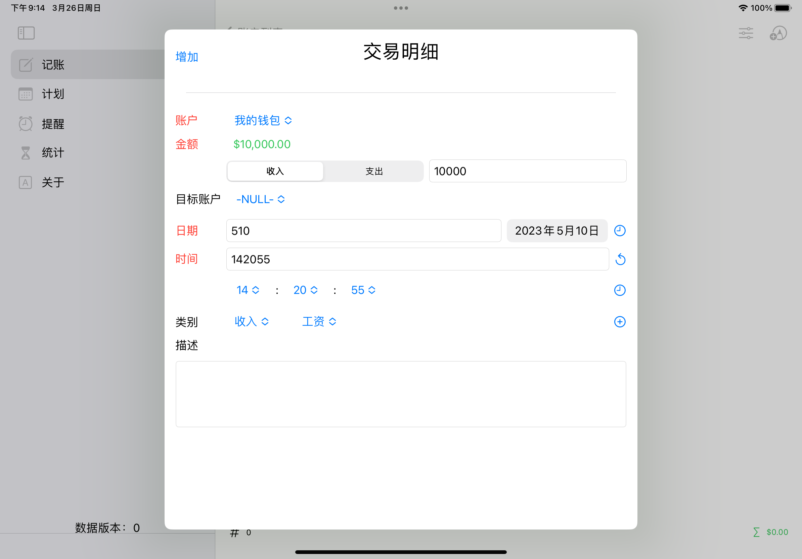
记账(iPad)
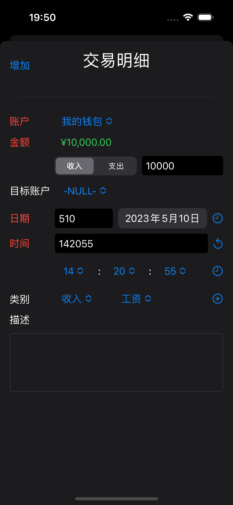
记账(iPhone)
日期的快速输入可以只输入日期（如5，日期设定为本月5日）、只输入月份和日期（如505，日期设定为今年5月5日）或输入完整的年月日（如20210505，日期设定为2021年5月5日）。
日期的快速输入可以只输入秒（如10，时间设定为0时0分10秒）、只输入分和秒（如505，时间设定为0时5分5秒）或完整的时分秒（如50607，时间设定为5时6分7秒）。 可以点击“类别”右侧的“+”按钮增加新的类别和子类别。
用明细生成计划
- iPad设备点击左侧边栏的“记账”按钮，iPhone设备点击底部的“记账”按钮，进入记账页面；
- 选择账户列表中的一个账户（可通过工具栏的“过滤”按钮对账户列表进行过滤）；
- 在交易明细列表中的一个交易明细上向右滑动，会显示“加入计划”按钮，点击按钮弹出“计划”窗口;
- 在“计划”窗口修改明细信息，填入周期和剩余期数，周期可以以“天”、“月”和“年”为单位，剩余期数会在每次计划入账后递减；
- 点击“增加”按钮，完成计划生成。

用明细生成计划(iPad)
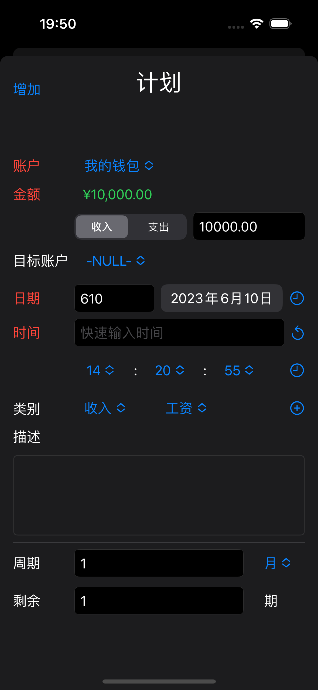
用明细生成计划(iPhone)
计划入账
- iPad设备点击左侧边栏的“计划”按钮，iPhone设备点击底部的“计划”按钮，进入计划页面；
- 在计划列表中的一个计划上向右滑动，会显示“入账”按钮，点击按钮弹出“交易明细”窗口；
- 在“交易明细”窗口编辑交易明细；
- 点击“增加”按钮，完成入账。如果计划的剩余期数大于1，则剩余期数减一并自动进入下一期；如果计划的剩余期数为0，则提示是否删除此计划，或者保留，用户可以对计划做出修改后继续执行。
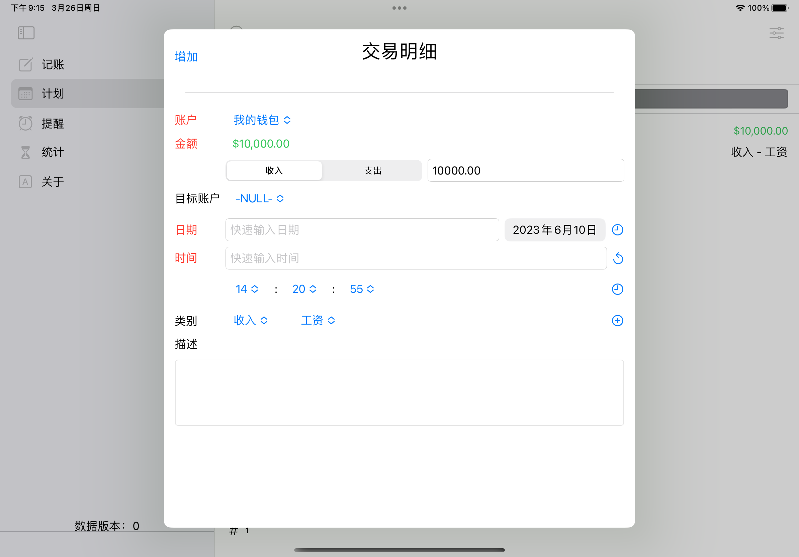
计划入账(iPad)
计划入账(iPhone)
提醒转计划
- iPad设备点击左侧边栏的“提醒”按钮，iPhone设备点击底部的“提醒”按钮，进入提醒页面；
- 向下滑动可以刷新提醒列表，在提醒列表中的一个提醒上向右滑动，会显示“加入计划”和“入账“按钮（对于到期换卡和免年费刷卡次数提醒，不支持滑动操作）；
- 点击“加入计划”按钮，弹出“计划”窗口；
- 在“计划”窗口修改明细信息，填入周期和剩余期数，周期可以以“天”、“月”和“年”为单位，剩余期数会在每次计划入账后递减；
- 点击“增加”按钮，完成计划生成。
提醒转计划(iPad)
提醒转计划(iPhone)